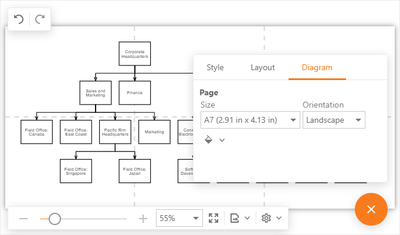
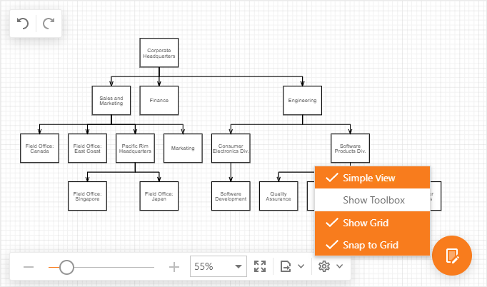
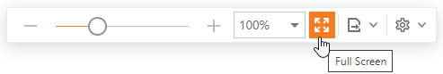

Page and View Settings
The Diagram tool divides the work area into pages. Use the commands on the Properties > Diagram tab to specify a page's size, orientation, and color.

Simple View
In simple view mode, the Diagram tool does not divide the work area into pages and a content occupies all the available work area.
To switch to simple view mode, select the Simple View command on the View toolbar.

Grid Settings
Use the following commands on the View toolbar to control grid settings.
- Show Grid - controls the grid visibility.
- Snap to Grid - specifies whether shapes and connectors are snapped to the grid.

Scroll a Page
Spin the mouse wheel to scroll a diagram page vertically.
Drag a side/bottom scroll bar to scroll a page vertically/horizontally.
Hold Space and drag a diagram page to pan it in any direction.

Full Screen
To switch to full screen mode, click the Full Screen command on the View toolbar or press F11 while the Diagram tool has focus.

Zoom a Page
Use one of the following ways to zoom into or out of a diagram page:
Press and hold the Ctrl key and spin the mouse wheel.
Change the current zoom level in the View toolbar.